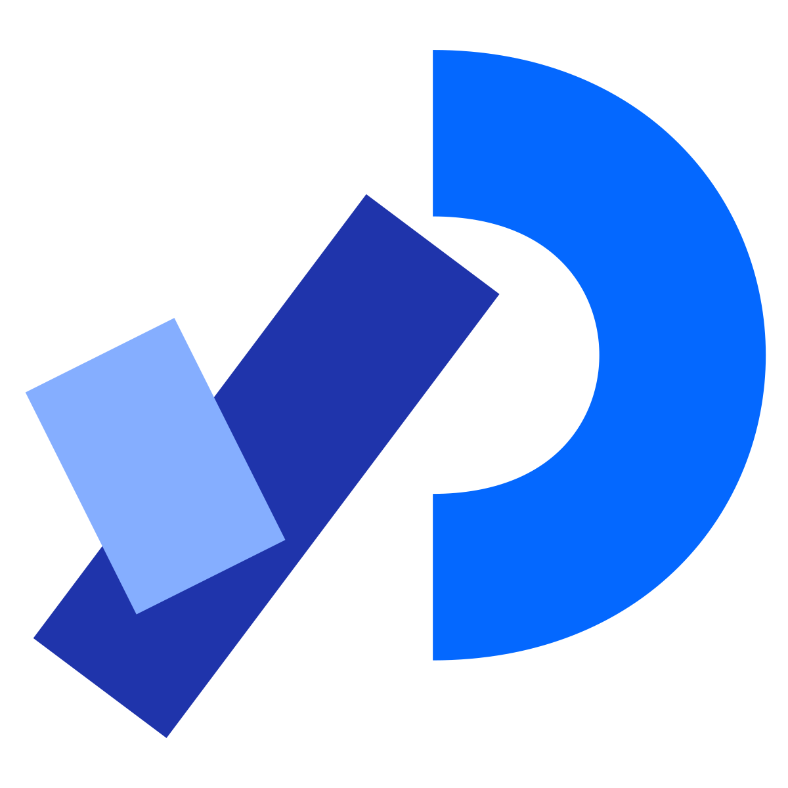
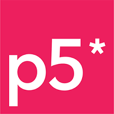
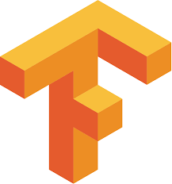

Generative Designs Using Programming
Art, sound and data brought to life with nothing but code. Explore 25 interactive experiments built with HTML, JavaScript, p5.js and ml5.js, from random patterns and audio visualizers to sorting algorithms and real-time webcam machine learning.
Where code meets creativity
Art has always been part of being human, and technology has given it new tools: animation, visual effects and computer-generated imagery are now industries of their own. This project asks a simple question: what can we create when programming concepts become the paintbrush?
Each experiment draws on real-world images, live user input, or computer-generated randomness to produce artworks, illustrations and animations right in your browser. The same ideas sit at the heart of modern data visualization, which is widely used across research.
Processing is a long-standing foundation that lets artists and engineers express ideas through code. p5.js brings that philosophy to the web, making creative coding available to anyone with a browser.
Tools & libraries
The open-source projects that make these experiments possible.

Processing
A free graphical library and IDE built for the electronic arts, new media art and visual design communities, designed to teach programming in a visual context.

p5.js
A JavaScript library for creative coding that makes programming accessible and inclusive for artists, designers, educators and beginners. Free and open source.

TensorFlow
An end-to-end open-source machine learning platform with a flexible ecosystem of tools, libraries and community resources.
ml5.js
Friendly machine learning for the web, with pre-trained models for pose detection, text generation, style transfer, music and pitch detection.